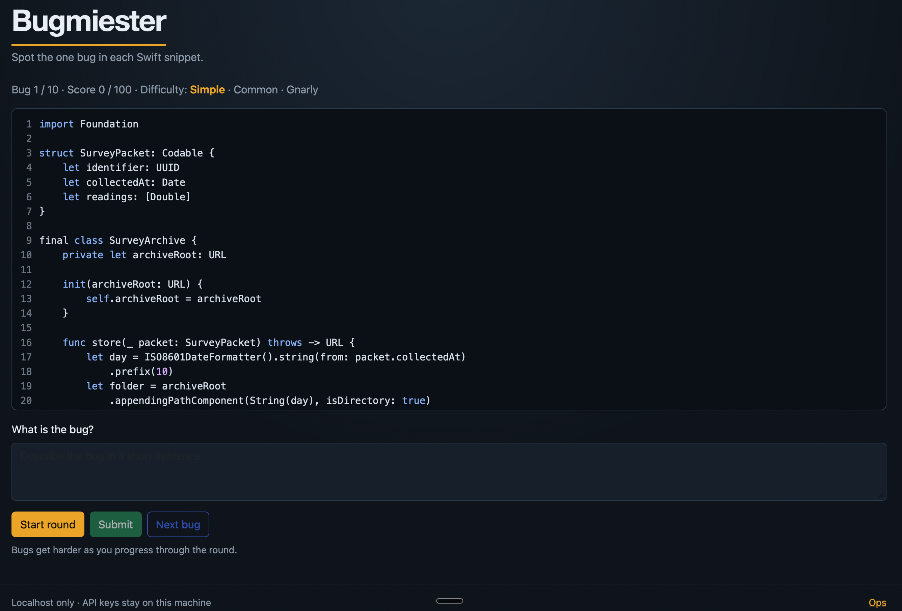
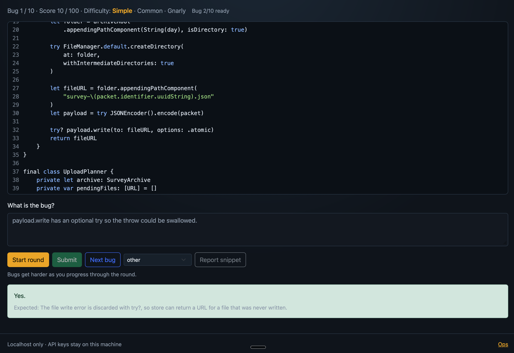

The problem
Interview and practice tools either give multiple-choice quizzes or dump you into a live LLM chat. Neither trains the skill I actually need: reading a short Swift snippet, naming the one real bug in free text, and getting a fair score without shipping API keys to a browser or a hosted service.
Why I built it
I write Swift with AI now. That is useful, and it can dull the muscle of spotting bugs by eye. I built Bugmiester to keep that skill sharp: a local trainer where I still have to read the code and name the bug, while the model only writes the snippets and helps score.
What I built
I built a FastAPI app that runs on 127.0.0.1:8765. Each
round delivers 10 short snippets with exactly one bug each. You type
what the bug is. Hybrid scoring awards up to 100 points. Keys and
config live under ~/Library/Application Support/Bugmiester/.
The UI is static HTML, JavaScript, and Bootstrap. An ops dashboard
sits at /ops. Swift is the default language pack;
JavaScript, Python, Rust, and C++ are also registered.
Three decisions
1. Trust boundary is the product.
Secrets stay in Application Support .env. The browser
never sees keys. The answer key is withheld on next-bug
and revealed only on submit, or after recovery. The server binds to
localhost. That is a product, not a chat wrapper with a skin.
2. Scoring is designed for fairness, not for the LLM.
Keywords run first (strong / weak / miss). The LLM judge runs only on a miss. Give-up phrases score zero without a judge call. On a partial, a recovery quiz offers shuffled choices without leaking the expected summary while the quiz is open. Offline golden eval and a documented acceptance suite keep scoring changes honest.
3. Curriculum is a system, not a prompt.
senior_mix ramps Simple → Common → Gnarly. Freshness
uses scenario seeds, an avoid-list, similarity reject, and canned
fallback when generation exhausts. Language packs keep the engine
language-agnostic. Adaptation watches the isolation cluster
(MainActor, sendable, concurrency): if Common-band misses pile up,
Gnarly is delayed and Common is reinforced first. Strong players see
no change.
Proof


payload.write has an optional try so the throw could be swallowed.
Feedback: Yes. Expected: file write error discarded with
try?. Score 10 / 100.
From the public repo and docs/ACCEPTANCE.md:
-
Mock full 10-bug round completes on localhost
(
round_possible=100, unique snippets) -
No answer key on
next-bug; no API key material inweb/ - Golden eval: 15 cases, 30 good / 30 bad checks pass offline
- Hybrid scoring, recovery quiz, freshness fallback, and ops analyze are covered by the acceptance checklist
Why I built it this way
I wanted a local training product with the same standards I use in iOS work: clear trust boundaries, fair free-text scoring, and a curriculum that adapts without becoming a black-box chatbot — so AI-assisted writing does not replace the ability to debug by reading.